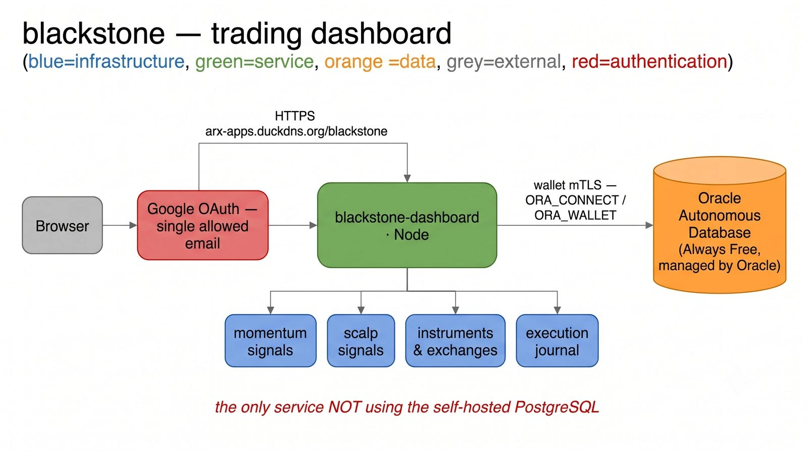
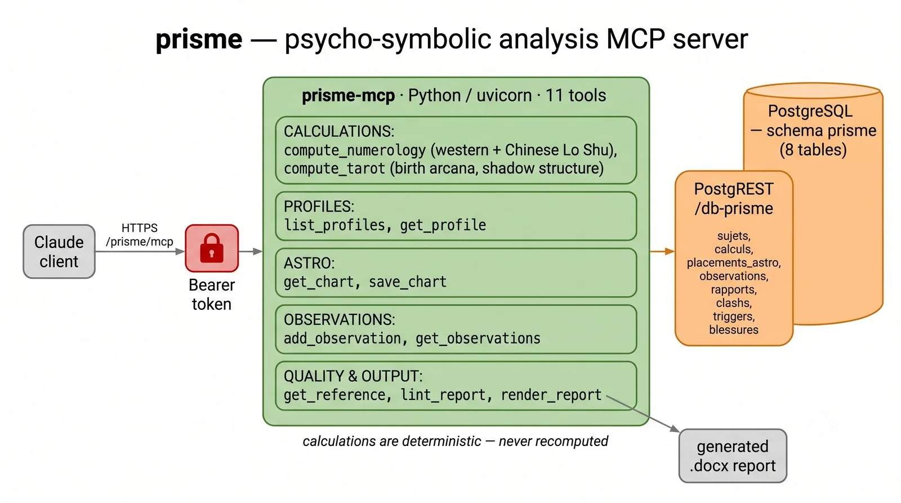
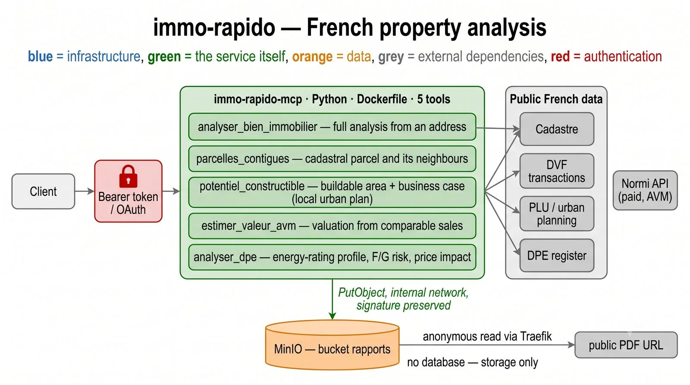
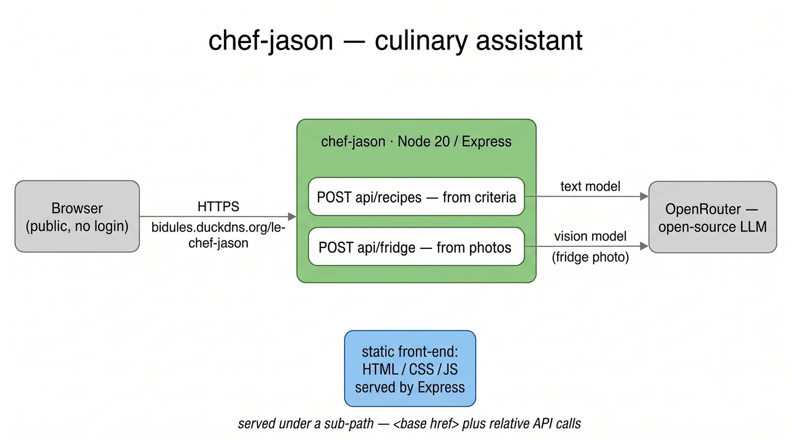
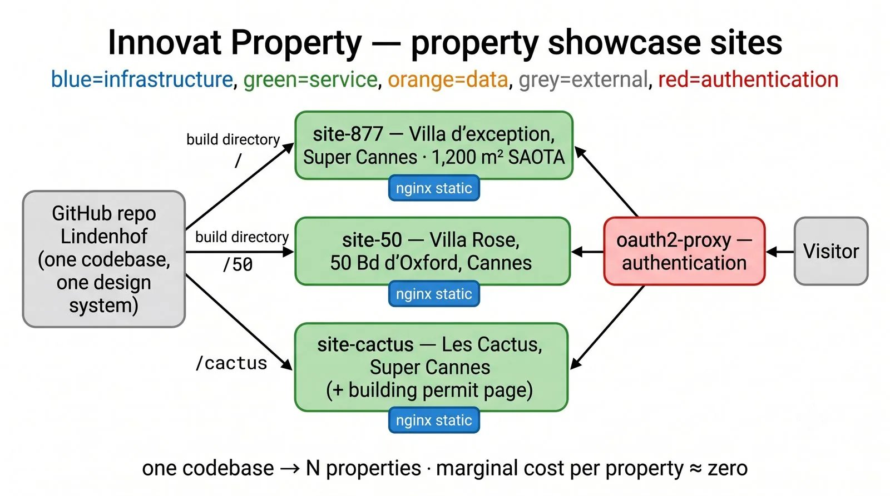
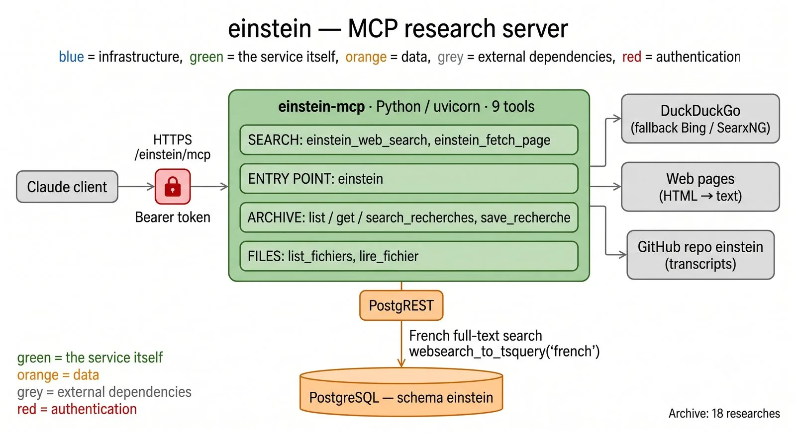

The systems I designed, built and run myself — and the code behind them.
Sixteen live addresses on a single infrastructure I run end to end. Public links are clickable; the others need my approval.
| Address — What it is | Description | Access |
|---|---|---|
| This site arxcapital.duckdns.org | Arx Consulting showcase, bilingual FR/EN, with built-in visit tracking. | Public |
| Private-access offer arxcapital.duckdns.org/acces-prive.html | Product page for the gate + tracking service sold to agencies. | Public |
| 10-rule guide arxcapital.duckdns.org/guide-ia-donnees.html | Free printable guide: adopting AI without exposing your data. | Public |
| Villa d'exception, Super Cannes arx-sites.duckdns.org/877/ | Sales file for a prestige property, behind the access gate. | Private |
| Villa Rose, Cannes arx-sites.duckdns.org/50/ | Belle Époque property by SAOTA, access on approval. | Private |
| Les Cactus, Super Cannes arx-sites.duckdns.org/cactus/ | Two-villa estate, sales file and building permits. | Private |
| Prospect gate arx-apps.duckdns.org/gate | Access form, mobile approval, one prospect database per site. | Public |
| Prospect back-office arx-apps.duckdns.org/gate/admin | Records, named visits, conversion funnel, CSV export. | Protected |
| Blackstone — signals arx-apps.duckdns.org/blackstone | Dashboard of the multi-asset trading signal engine. | Protected |
| Visitor tracker arx-apps.duckdns.org/tracker | First version of the self-hosted audience tracking. | Protected |
| Einstein — MCP server arx-mcp.duckdns.org/einstein | Web search and archive of sourced research, driven by Claude. | Token |
| Immo Rapido — MCP server arx-mcp.duckdns.org/immo-rapido | French public real-estate data, queryable in plain language. | Token |
| Prisme — MCP server arx-mcp.duckdns.org/prisme | Psycho-symbolism analysis engine exposed as an API. | Token |
| Omni — MCP gateway arx-mcp.duckdns.org/omni | Unified MCP gateway, BP v3 engine & PostgreSQL 18 persistence. | Token |
| Data API arx-mcp.duckdns.org/rest/v1 | Self-hosted PostgREST, one isolated schema per application. | Token |
| CV dashboard arx-sites.duckdns.org/candidatures | Job-application tracking and ATS scoring. | Protected |
| Chef Jason bidules.duckdns.org/le-chef-jason | LLM-powered web app, the first workload migrated. | Public |
Every service below is designed, built and operated by me — each one containerized, deployed by git push and served over HTTPS from the OCI cloud. Click a card to open the diagram full size.

Multi-asset signal engine built on documented, literature-backed strategies. Signals only by design.

A Python analysis engine exploring symbolism and psychology, exposed as an API on the platform.

An MCP server over French public real-estate data — transactions, zoning, market signals.

A public LLM-powered web application (Node/Express) — the first workload migrated onto the platform.

Static and dynamic sites served through Traefik with automatic HTTPS — including this one.

Web search, page reading and a persistent archive of sourced research syntheses, driven by Claude.
github.com/benoit-sigwald — all built with Claude Code, most deployed on my self-hosted OCI PaaS.
Unified MCP gateway & BP v3 behavioral profiling engine with PostgreSQL 18 persistence on OCI.
This site itself — landing profile + OCI migration case study, deployed by git push via Coolify.
Self-hosted visitor tracker: JS beacon, geo-IP enrichment, Oracle ATP storage, monitoring dashboard with map.
MCP research server: free web search, page reading, and a persistent archive of sourced research syntheses with French full-text search.
Multi-asset trading signal engine — 4 documented strategies on real-time data, mobile alerts via ntfy, full journaling. Signals only by design.
MCP bridge connecting Claude Code to TradingView Desktop via Chrome DevTools Protocol — AI-assisted chart analysis and Pine Script development.
Multi-agent legal assistant producing fully sourced French litigation notes via Légifrance (OpenLegi MCP) — orchestrator + specialist research agents.
Industrialises job applications: paste a job spec, get a tailored one-page DOCX CV and cover letter, with ATS keyword scoring before/after.
Private data companion of cv-optimizer — master CV, application history and analyses, kept out of the public repo as a submodule.
The migration playbook: infrastructure docs, deployment scripts and diagrams for moving every workload onto the OCI Always Free server.
MCP server over French public real-estate data — transactions, zoning, market signals — queryable straight from Claude.
Psycho-symbolism analysis engine exposed as an MCP server, with its own PostgREST schema on the platform.
LLM-powered web app (Node/Express) — the first workload migrated onto the platform and the proof of the push-to-deploy pipeline.
Website project hosted on the platform, deployed from its own repo with a dedicated deploy key.
Private TypeScript application — work in progress.
Tell me where your time goes today. If I see nothing worth doing, I'll tell you straight away.
Book a 30-minute callOr call me: +33 6 13 70 53 21